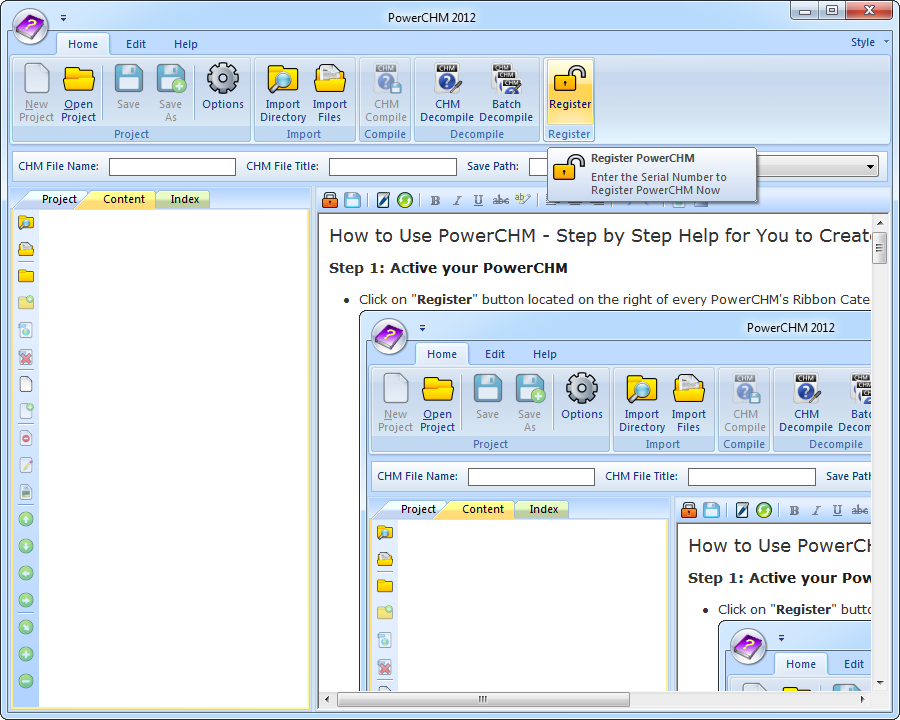
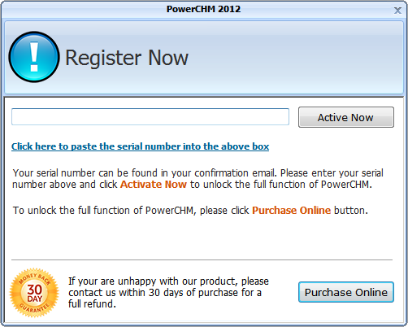
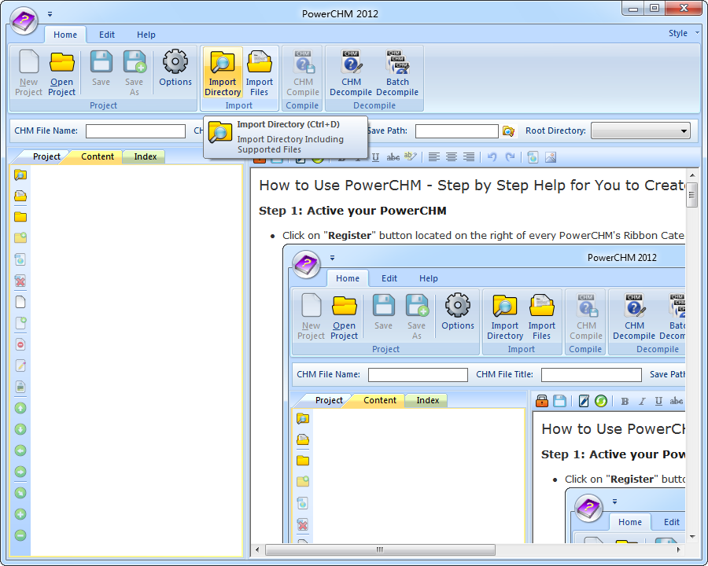
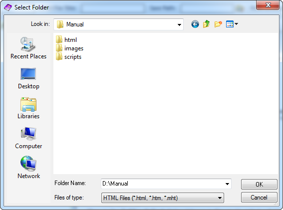
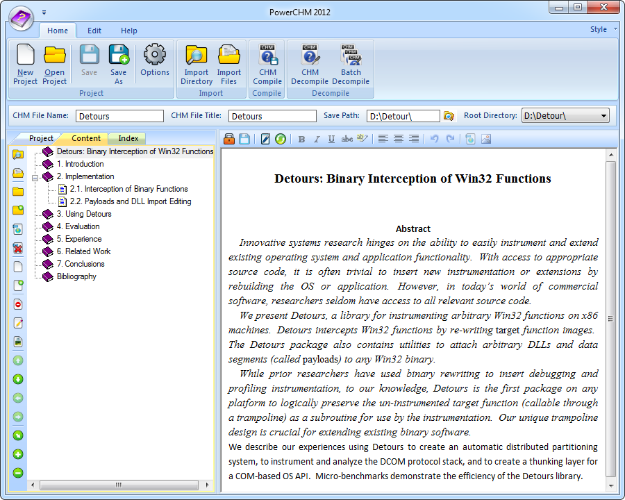
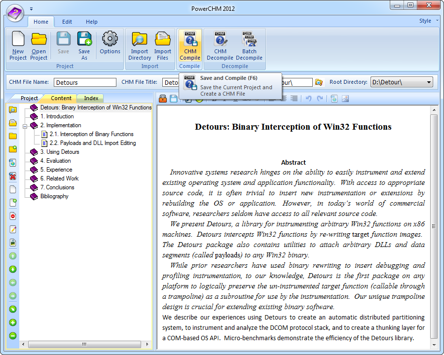
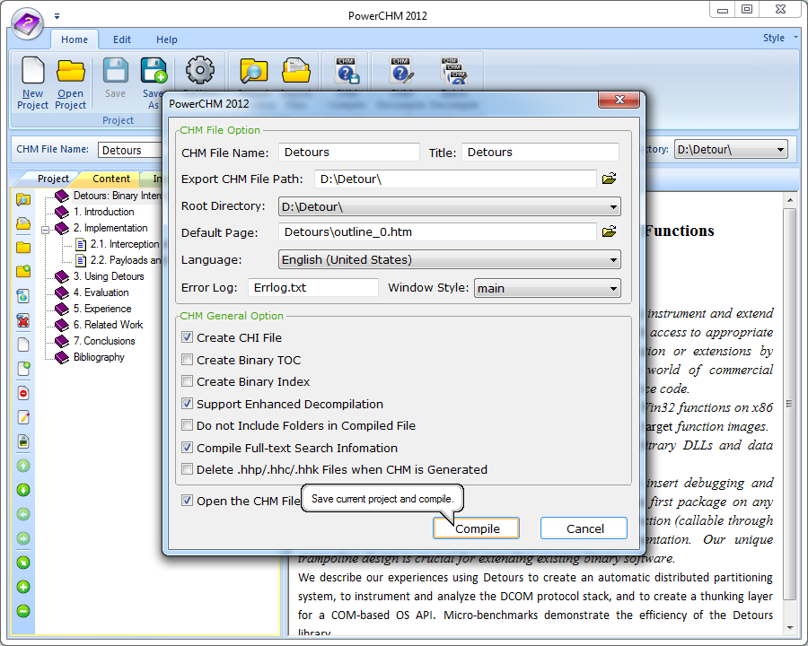
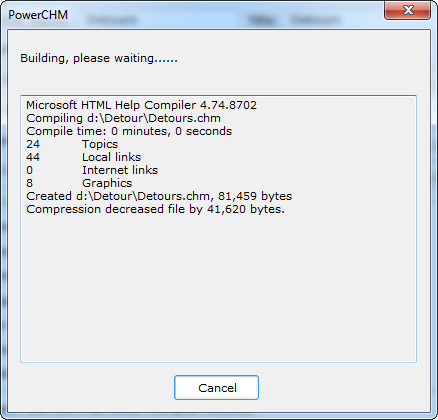
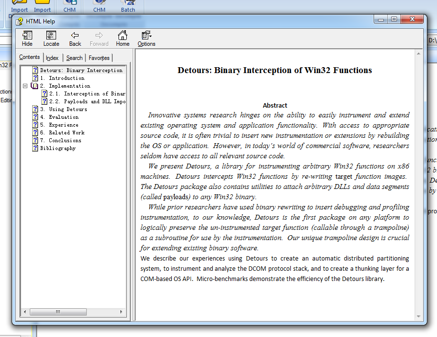

How to Use PowerCHM - Step by Step Help for You to Create Your CHM File
Step 1: Active your PowerCHM
- Click on "Register" button located on the right of every PowerCHM's Ribbon Category.
- You will now see the Register screen. If you have not registered PowerCHM please click here.
- Copy and Paste your Serial Number into the registration textbox fields.
- Ensure that all information is to the far left of the textbox fields and no blank spaces to the left before clicking the "Active" button.
Step 2: Adding Files
- Click "Home" category tab on the top to show the main functions. The easiest way to add files is to import a prepared folder.
- Click "Import Directory" button(Orange highlighted button in the below image) to show the Folder Select dialog(shown in Figure 1), then select a folder and click Select button. All the supported files will be added to the Content Tree(see Figure 2).
- Figure 1: A folder which includes prepared directory content and supported files is being imported
- Figure 2: Some supported files what you need has been imported
Step 3: Compile to CHM
- After all files are added, you can execute CHM Compile command to create your chm file.
- Click "CHM Compile" button(Orange highlighted button in the below image) to create your chm file.
- You will see a dialog to confirm some necessary settings about your CHM. Click the Compile button to get your final CHM file.
- Finally, you can see a compiling process dialog as below,

and then the result CHM file will be opened.